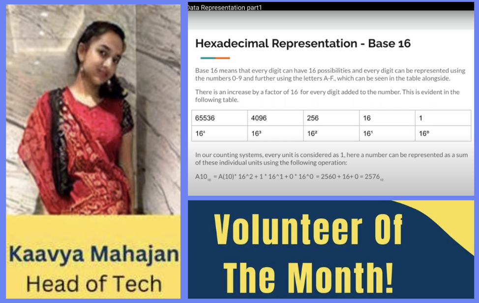
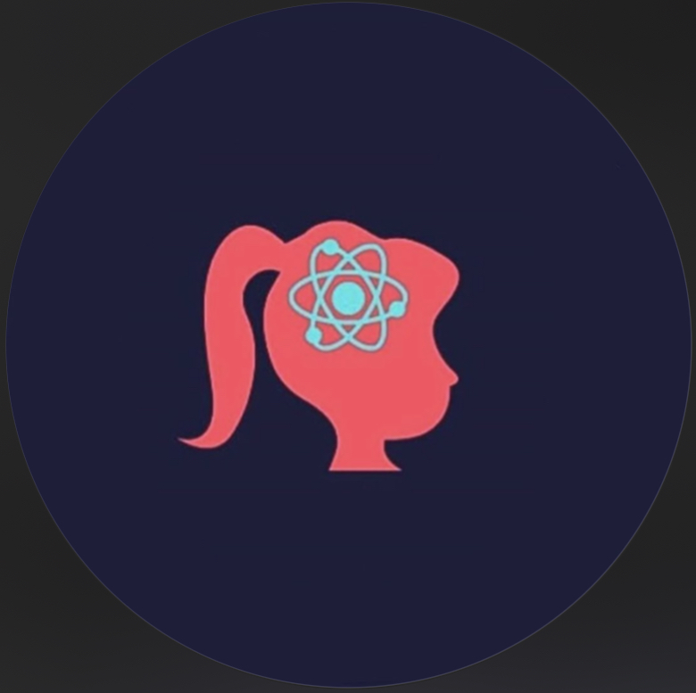

Junior Machine Learning Intern
The Nova Web, Dubai
• Used Python to scrape the internet for news articles, performed Sentiment Analysis using an ML model as part of a larger Customer Due Diligence Project
• Created API endpoint for effective deployment and use in conjunction with other offerings
• Created documentation for clearer understanding of code, and its functionality
Co-Founder
Unhushed Empower
• Started an awareness campaign to educate teenagers, and students in our community regarding Comprehensive Sexuality Education
• Reached over 250 people, and working towards live sessions with counsellors for students to gain appropriate and accurate information
Volunteer; headed Microgreens Project
Earth Day India Network

• At an in-person event, raised interest of 50+ people in Microgreens, and nutritious eating, through a self-initiated and self-led project
• As a volunteer, conducted data collection tasks for various in-organisation tasks, such as collecting a database on youth Climate Ambassadors
Tech and Product Head
Knowledge Unbound

• Responsible for handling all technical aspects and development of new content delivery methods and products.
Computer Content Creator
• As a content creator, produced videos related to the subject syllabus
Chapter Lead
Encode Justice
• Responsible for research in conjunction with other departments (social media, policy etc.)
Director of Education for India Chapter
• Responsible for creating and customising material on ethical AI for the Indian context
• Spreading awareness among high school and college students about the pitfalls, use cases and realities of AI
Outreach Volunteer
STEMM4GIRLS

• As an outreach volunteer, I contacted attendees and spread information regarding sessions through social media among high school students, especially girls
STEMM4GIRLS is a Nationally Recognised Youth organisation that createws awareness about the opportunities in STEM, and conducts seminars with prominent personalities in the field of STEM.